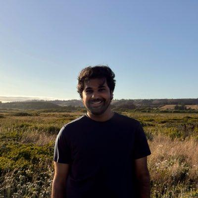

I'm a computer scientist by training. For most of my career, I've built and evaluated AI systems to improve health and well-being. I currently focus on multidisciplinary measurement of AI systems at the Center for AI Standards and Innovation (CAISI) within the National Institute of Standards and Technology (NIST). I work on the Applied Systems team led by Stevie Bergman.
I also remain a postdoctoral scholar at Stanford University, working with Sanmi Koyejo and Ehsan Adeli on building and evaluating multimodal AI systems.